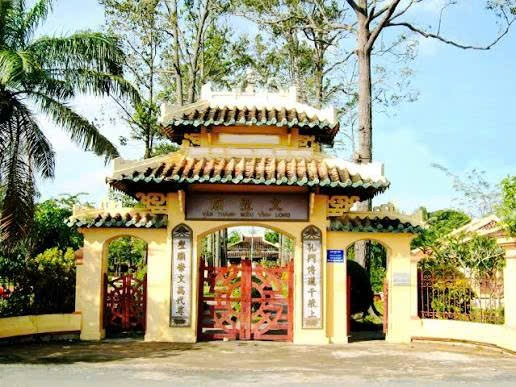
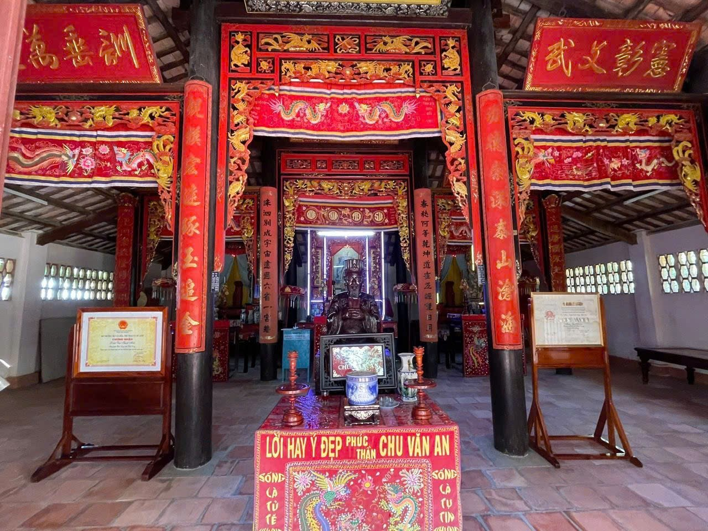
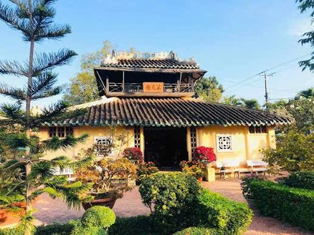
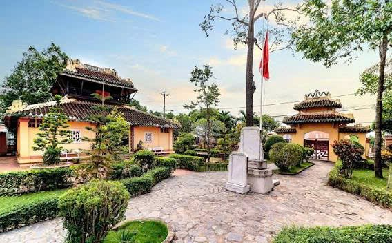

Biểu tượng của truyền thống hiếu học và đạo lý tôn sư trọng đạo tại Nam Bộ.
Văn Thánh Miếu Vĩnh Long, còn gọi là Văn Miếu Vĩnh Long, được xây dựng vào thế kỷ XIX nhằm thờ Khổng Tử và các bậc hiền triết Nho giáo. Đây là một trong những công trình tiêu biểu phản ánh truyền thống hiếu học, coi trọng tri thức và đạo đức của người dân vùng Nam Bộ.
Trải qua nhiều biến động lịch sử và chiến tranh, Văn Thánh Miếu từng bị hư hại nhưng đã được trùng tu, bảo tồn để giữ gìn giá trị văn hóa – giáo dục cho các thế hệ mai sau. Ngày nay, nơi đây không chỉ là di tích lịch sử mà còn là không gian sinh hoạt văn hóa, tổ chức lễ hội, hoạt động giáo dục và tham quan du lịch.



